弥五郎どん伝説 宮崎県山之口町 宮崎県日南市 鹿児島県大隅町
弥五郎どんを御存じであろうか。 養老4（720）年に起った隼人の乱の時の隼人族の首長であった人物だ。 この頃、南九州は日向といわれた隼人族の地であったが奈良の大和朝廷は日向を薩摩と大隅に分割し支配の強化を計ったのである。 その分割統治、支配強化に対して反乱した隼人族は大和朝廷の圧倒的な兵力の前に力尽き、大勢の犠牲者を出したという。 大和朝廷は隼人族の怨霊を恐れ石清水八幡で放生会を行なわせその際に隼人族の首長の弥五郎どんの大きな人形をつくったといわれているそうだ。 その後全国の八幡神社でこの弥五郎どん人形は広まったそうな。 そんな弥五郎どんは現在、宮崎県山之口町の的野正八幡宮、鹿児島県大隅町の岩川八幡神社、宮崎県日南市の田之上八幡神社の三カ所で見る事が出来る。 それぞれの土地の八幡神社の祭にシンボルとして巨大な弥五郎どんの人形が登場するというのだ。 その異形の様と巨大さは見るものをかなりビビらせる位の迫力満点の薩摩隼人っぷりである。 「巨大な人形」というコトバにピクンと反応してしまう悲しい性の私、灯に群れる蛾のように南九州に吸い寄せられていくのである。 弥五郎どんの祭は毎年秋に行なわれるが、弥五郎どんについて詳しく展示している施設があるので一年中弥五郎どん気分を味わえるのだ。 ちなみにこの三体の弥五郎どんはそれぞれ兄弟だといわている。 ・・・同じ名前で三兄弟。しかも弥「五郎」って五男なんじゃあ・・・ま、いっか。
という訳で長男の弥五郎どんを訪ねて宮崎県南部にある山之口町に行く。 的野正八幡宮の近くに弥五郎どんの館という施設がある。ここは弥五郎どんについてみっちり学んでもらおうという気合いの入った施設だ。 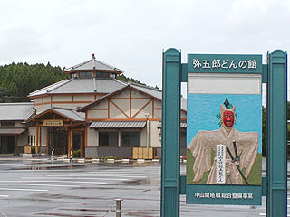 建物に入ると八角の建物の中央にデーンと弥五郎どんが立っていた。 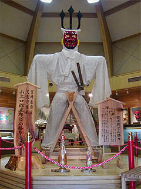 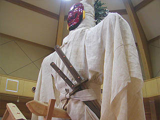 4メートルという大きさもさることながら印象的なのはその異形っぷりである。 赤い面、脇の二本差し、頭の上には三本槍みたいなモノが突き出ていてバイキンマンみたいでかなりカッコいいぞ。 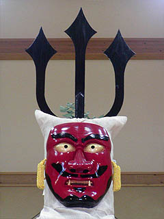 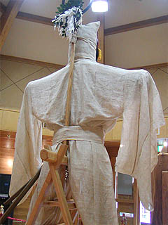 元々大和朝廷が全国でさせた祭なので、もしかしたら「ウチらにまつろわない隼人の親方の弥五郎はんはこんな怖いお顔どすえ〜」といったプロパガンダ的な演出だったのかも知れない。 だとしたら異形の貌も当たり前。牙は生えてる、ヒゲは上向いてる、眼は金、もう鬼とかナマハゲみたいですもん。 振袖みたいな袖と頭巾はチョット鞍馬天狗みたいである。これは弥五郎どんは酒と博打が好きで身代を潰したのでボロを着ているということだそうで。 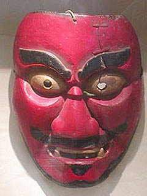 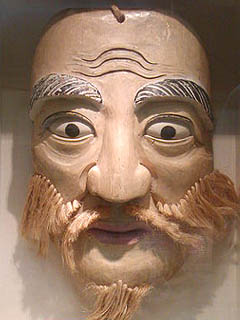 以前、使用されていた面。左が江戸から明治初期まで使われていた面、右が明治から昭和に使われた面である。 この面のデザインの変遷には何か政治的な意味でもあったのだろうか？と、勘ぐってしまう位違うモノになっている。 例えば明治になって薩摩が政権の中枢に進出したので、ある意味朝敵のシンボルだった弥五郎どんをマイルド路線に変更したとか。何の裏付けもないですけど。 さらに現在の面は古くからのスタイルをまた復活させたカタチになっている点が興味深い。 赤い面の左目周辺が割れておりそれをカスガイでつなげていて余計凄みが増している。 館内には弥五郎どんの資料が充実。 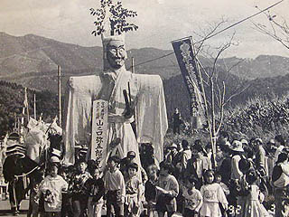 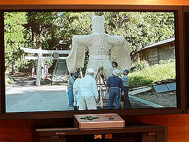 的野正八幡宮の祭は11月3日に行なわれる。この行列は浜殿下りと呼ばれているそうだ。現在、無形文化財に指定されている。 弥五郎どんの組立や祭の様子を記録した貴重な映像資料も豊富で弥五郎どんを知る上では実にユースフルな展示であった。 弥五郎どん祭の様子が模型で展示されていた。 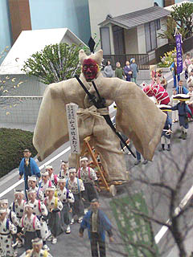 こんなマニアックなテーマの割には立派な施設だった。 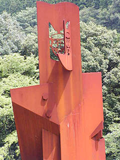 町内には弥五郎どんをかたどったこんな「作品」も。 弥五郎三兄弟の長男つーのは町の誇りなんですね〜。
弥五郎どんウォッチの旅は鹿児島県に入る。 大隅町の弥五郎どんは次男である。 ここもまた弥五郎どんが御自慢の御様子。あちこちに弥五郎どんをかたどったキャラが点在している。 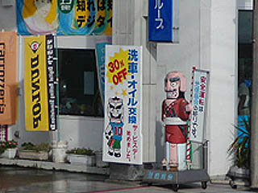 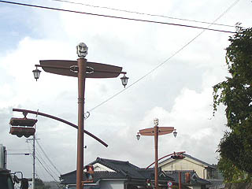 で、大隅町にはその名もズバリ「弥五郎伝説の里」という観光施設がある。 ここには弥五郎まつり館という建物があり、岩川八幡神社の弥五郎どんのレプリカが展示されている。 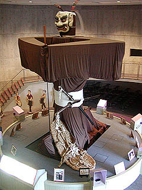 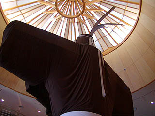 館内は出店や人形などがおかれており祭の様子を再現している。山之口町の弥五郎どんの館に比べるとより娯楽的な要素が強い。 ここの弥五郎どんは着流しで幣束のようなモノを持っている。腕の上部が真っ平なのが可笑しい。 面は鬼のような獅子舞の獅子のような顔だが山之口町の長男に比べると比較的マトモともいえる。 ここは弥五郎どんを一周するように階段があるので眼の高さまで登ることが出来る。高さは5メートル程というが、長男の4メートルに比べると遥かに大きく見える。 弥五郎どんの周囲にはモニターがあり、祭の様子などを見ることが出来る。 中には衝撃的なタイトルも。 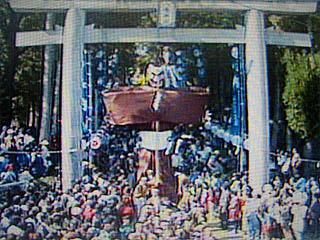 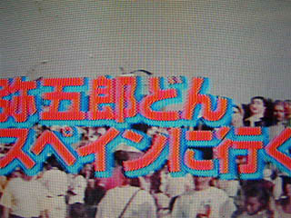 スペインに行ってるのかあ〜。凄いっすね。ちなみに鹿児島新幹線開通の際にも弥五郎どん、鹿児島に出張ってます。結構忙しいようで。 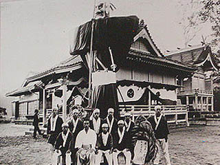 昭和17年の写真。この時点で現在と同じスタイルが確立されているのが判る。 元々八幡神社の放生会では人形ではなく大きな面が行列の先導となりそれが巨大人形に進化していったという説もある。 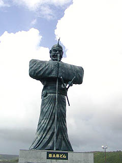 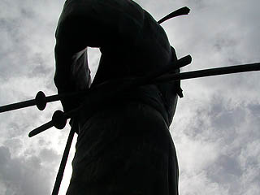 屋外には巨大な弥五郎どんの銅像がある。 高さ15メートル、大刀９メートル小刀7メートル、平成8年の作だそうで。 ま、大隅の人にとっては神様仏様みたいなものだからある種の大仏といってもいいのでしょうか。 勿論、はなっから胎内巡りとか期待してないですけど立派な像ですね。
ところかわって日南市。 国の伝建地区にも指定されている九州の小京都と呼ばれる飫肥にある田之上八幡神社。 ここは飫肥城や武家屋敷にも程近いところだ。 この神社の祭にも弥五郎どんが現れる。普段は何処にいるかというと・・・ 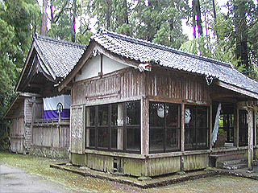 本殿の後ろの倉庫でお休みしてました〜。 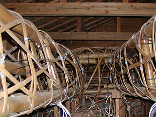 神社の方によると、11月23日の祭にはこの神社の鳥居のところに鎮座するそうだ。 また、ここの弥五郎どんは大き過ぎるので、小型の弥五郎どんが町中を進行するとの事であった。 で、大隅の弥五郎まつり館にあった写真がこちら。 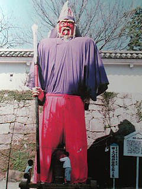 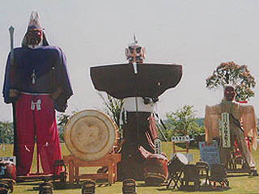 日南（飫肥）の弥五郎どんは身長7メートルという巨体だ。 かなり激しいカラーリングの衣装といいお顔といい、一番見たかったのだがお休み中なので写真で我慢。 三兄弟が顔を合わせる事は殆ど無いが、三体並んだ珍しい写真があった。これは平成13年に大隅の弥五郎伝説の里オープン五周年の際に集まった弥五郎三兄弟。 長男、次男、三男と歳が下の方が大きくなっているという三段逆スライド方式になっているところがシブイ。 山之口の長男は最初の大和朝廷が始めた放生会に生まれた神亀元（724）年の頃のものと考えられる。次男のいる岩川八幡神社が出来たのが万寿2（1025）年、三男の田之上八幡神社が天永元（1110）年となっている。従って年を経るごとに大型化していったようだ。 ・・・そのまま続けば今頃60メートルの弥五郎どんが街中を闊歩！ってなことになったかも知れないのに・・・
2004.8.
珍寺大道場 HOME